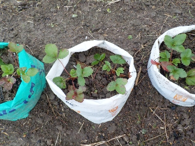

遊びで植物を育てよう
イチゴのダンゴムシ対策でカットした肥料袋を使って育てることにしました。
更新日 : 2025/11/08
ダンゴムシがイチゴに寄ってこないように、肥料袋でガードしました。
更新日 / 2025/11/08

イチゴが熟れるとダンゴムシがやって来て、イチゴを食べて穴を空けるんですが、そういうの見たくないなと思って対策をしました。
畑に畝を作って、その上に半分に切った肥料袋を置いて、土を詰めてイチゴの苗を植えました。
ダンゴムシが袋の側面を登るのは難しいんじゃないかと思ってやってみました。袋の上部はくるくるっと外側で巻いているので返しっぽくなっています。
袋は筒状で、根っこは下に伸びるし排水もいいので、イチゴが育ちやすいんじゃないかと思っていますが、どうなんでしょうね。
一袋に2株植えたので、ちょっと窮屈な感じになりました。畝の空いたスペースにはカブのタネを蒔いたので、それぞれ順調に成長したら緑が生い茂るようになると思います。
この植え方が成功するといいな。
TOP > 果物 > イチゴ
苺は美味しい。沢山食べたい。
【おいしいものを食べよう。】【たくさん寝よう。】
【ソロ活をしよう!】【季節感のあることをしよう。】【動画視聴はほどほどに。】【当サイトの全てのコンテンツは無断転載禁止です。】